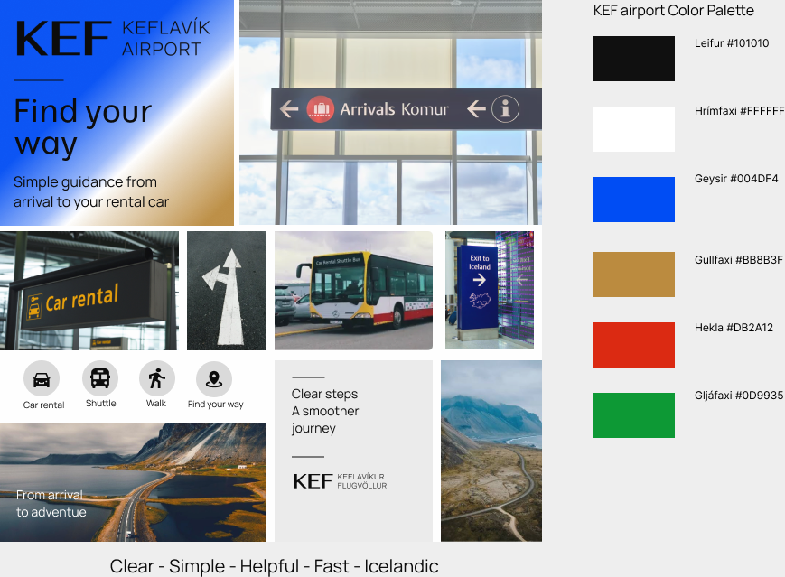

Aðgengisskýrsla
Lestrarhornið er React-síða með átta ímynduðum bókum úr JSON-skrá. Aðalverkefnið er að leita að Norðurljósum, opna upplýsingar, loka þeim, vista bókina og skrá sig í bókaklúbbinn.
B stóðst níu sjálfvirk próf í varðveittri lokakeyrslu og GitHub-birting hefur tekist. Nemandi hefur greint frá árangri í handprófunum. Nákvæm 200% prófun, krafa um nýtt regression-próf eru enn óstaðfest.
Aðferð
Sama prompt, spec, gögn og upphaflegt prófunarsafn voru notuð í tveimur aðskildum agent-lotum án samtalssögu. A var byggt áður en sérsniðni aðgengis-skillinn var búinn til. B fékk skillinn og var síðan lagfært. A er varðveitt óbreytt.
Prófin voru skrifuð og vistuð í Git fyrir byggingu. Fyrsta tilraunin til að keyra þau stöðvaðist vegna sandbox-villu við ræsingu Chromium. Það var innviðabilun, ekki sönnun þess að prófin greindu aðgengisvillur. Þetta frávik frá kröfunni um staðfest fallandi upphafspróf er varðveitt í skráningunni.
Sjálfvirkar niðurstöður
Raunverulegar Playwright-keyrslur nemanda 28. október 2026. Engin próf voru sleppt.
| Útgáfa | Stóðust | Féllu | Próf sem féllu |
|---|---|---|---|
| A, fyrsta keyrsla | 6 | 3 | 02 lyklaborðsferli; 04 gluggafókus; 09 þröngt útlit |
| B, fyrsta keyrsla | 7 | 2 | 02 lyklaborðsferli; 04 gluggafókus |
| A, lokaprófunarsafn | 7 | 2 | 04 gluggafókus; 09 þröngt útlit |
| B, eftir lagfæringar | 9 | 0 | Engin |
Gögn: report/evidence/a-first.json, b-first.json, a-final-comparison.json og b-typeahead.json.
Prófin kanna merkingarbært HTML, lyklaborðsferli, sýnilegan fókus, gluggafókus, lifandi niðurstöðufjölda, formvillur, vistunarhnapp, axe og 320 px útlit. Axe fann engar serious eða critical villur í þeim stöðum sem lokaprófið skoðaði á B. Þetta sannar ekki fullt WCAG-samræmi.
Það sem AI gerði rangt og lagfæringar
Fyrsta B-útgáfan hélt ekki Tab-fókus inni í glugganum samkvæmt prófinu. B fékk afmarkaða Tab/Shift+Tab meðhöndlun. Seinkaður close-viðburður gat einnig fært fókus eftir að notandi hafði farið áfram; lokun og fókusendurkoma fara nú fram saman.
AI skrifaði líka óáreiðanlega takkaröð fyrir native select í prófinu. Sameiginlega prófið notar nú P til að velja „Prentuð bók“ og staðfestir enn gildið printed. Bæði A og B voru endurprófuð með því sama prófi. A-kóðinn var ekki lagaður. Fyrri próf og niðurstöður eru varðveitt.
Lokamunurinn er því niðurstaða bæði skill-leiðbeininga og síðari lagfæringa á B. Ein tilraun sannar ekki að skillinn einn hafi valdið öllum muninum.
Agent-prófun og div-tilraun
Fyrri agent-prófun á B kláraði leit, glugga, vistun og sýniskráningu með lyklaborði. Hún er skráð í report/agent-observations.md og kemur ekki í stað handprófunar nemanda.
Agent endurtók ferlið 8. nóvember 2026 í innbyggðum vafra: á loka-B opnaði Enter bókina, Escape lokaði, Tab fór á Save og Space breytti stöðunni í Vistað. Sýniskráning tókst. Í eins afriti með div fór Tab fram hjá vistun beint í Name og staðan var áfram Óvistað. Smellur á div virkaði samt. Aðalverkefnið var því ekki hægt að klára með lyklaborði í afritinu. Þetta er agent-prófun, ekki VoiceOver-prófun nemanda. Opna tilraunaafrit.
Handprófun nemanda
Skráð úr frásögn nemanda 8. nóvember 2026. Hún framkvæmdi aðgerðir sjálf eftir skrefaskiptar AI-leiðbeiningar; þetta var því ekki alveg án AI-leiðsagnar. Nákvæmar útgáfur Safari og macOS voru ekki skráðar.
Lyklaborð og Safari
Nemandi gat lokið aðalverkefninu með lyklaborði. Síðar fór Tab frá Search beint í formið þótt bækurnar væru sýnilegar. Það gerðist líka við venjulega stærð. Eftir leiðbeiningar um Safari-stillinguna „Press Tab to highlight each item on a webpage“ gat hún opnað bækurnar og lokið ferlinu. Þetta bendir til vafrastillingar fremur en galla vegna zoom; fyrri stilling var ekki sjálfstætt sannreynd.
VoiceOver og stækkun
Eftir leiðbeiningar um VoiceOver-prófun sagði nemandi „it worked“. Engin nákvæm skráning upplestrar liggur fyrir. Með aukinni stækkun gekk ferlið og nemandi sagði að útlitið væri gott; engin skörun eða afklipping var tilkynnt. Stækkunarprósentan var óþekkt og 200% prófun er því enn óstaðfest.
Takmörk og nýtt próf
Chromium-prófin prófa ekki persónulegar Safari-stillingar. Enginn staðfestur forritunargalli fannst í þessari handathugun. Nýtt regression-próf hefur því ekki verið búið til og þeim verkefnislið er ekki lýst sem lokið. Ræða þarf við kennara hvernig uppfylla skuli liðinn eða halda sjálfstæðri handprófun áfram. Nánari athugasemdir eru í report/manual-review.md.
Module 3 stíll
Litir og letur eru úr Module 3 moodboardinu: Moderustic fyrirsagnir, Manrope meginmál, #101010 og #FFFFFF fyrir texta/fleti, #004DF4 fyrir aðgerðir og fókus, #DB2A12 fyrir villur. Stíllinn var afhentur eftir upphaflegu A/B-byggingarnar og settur á loka-B og skilasíður. A er varðveitt óbreytt; stílmunurinn er ekki afleiðing skillsins. Sjá spec.md og report/contrast.md fyrir birtuskil.

Aðgengis-skill
Reglan um native button er sérstaklega mikilvæg í div-tilrauninni: button hefur innbyggt lyklaborðsaðgengi og hlutverk fyrir hjálpartækni. Reglan um fókus í dialog varð einnig að skýrri viðmiðun þegar B var lagað.
Lesa skillinn sem B fékk
---
name: accessibility
description: Use whenever you build or change UI.
---
# Accessibility
Follow the project's spec.md for headings, landmarks, accessible names, focus sequence, image alternatives and colour pairs. Preserve the requested design and task scope. Do not alter the test suite to conceal an implementation failure.
- Use native button, a, label, dialog, nav, input and select elements. A clickable div does not inherit button semantics or keyboard activation. Do not put interactive elements inside other interactive elements.
- Every control needs a meaningful accessible name. Prefer a visible label; use aria-label for icon-only buttons. Keep visible words in the accessible name. Hide decorative icons with aria-hidden, not the whole button. A toggle uses a stable name and aria-pressed reflecting its actual state.
- Make all actions reachable in logical DOM order with Tab/Shift+Tab and operable with native keys. Keep focus visibly outlined, not obscured or clipped. Never use positive tabindex. Provide a working first skip link.
- Open modal dialogs with showModal(). Give the dialog a title with aria-labelledby, move focus inside, keep background content inert, support Escape and a visible Close button, and return focus to the exact opener on every close path. Verify this behavior in a real browser.
- Name each form field with label/for and use required and appropriate types/autocomplete. Show textual errors beside fields only after attempted submission. Synchronize aria-invalid and aria-describedby with displayed errors; render errors before focusing the first invalid field. Announce ordinary success with an existing role=status region without moving focus. Do not announce every keystroke as an urgent alert.
- Describe meaningful images according to their purpose. Use alt="" for decorative images, including redundant decorative cover artwork as specified in spec.md. Do not use filenames as alternatives.
- Make touch targets at least 24×24 CSS px; prefer 44×44 for standalone controls. Preserve contrast of text, borders, icons and focus outlines. Never convey an error or saved state by colour alone. Keep content operable at narrow widths and 200% zoom.
- Check keyboard paths and live announcements as well as axe results. Automated checks do not prove complete accessibility; report exact tests run, outcomes and environmental blockers. Never invent screen-reader or manual-test results.
When you are done, run the tests and fix what fails.
Áður en verkefninu er skilað
- Ljúka sjálfstæðri handprófun án AI-leiðsagnar, staðfesta 200% zoom og ganga frá kröfu um nýtt regression-próf.
- Yfirfara prompt.md, spec.md og hverja línu prófanna.
- Birting staðfest: opinber forsíða. GitHub Actions-keyrsla 42496077419 lauk með success. Nýrri breytingar þurfa einnig að standast CI.
- Skila repository-slóð og forsíðuslóð og framkvæma rýni á tveimur samnemendum.